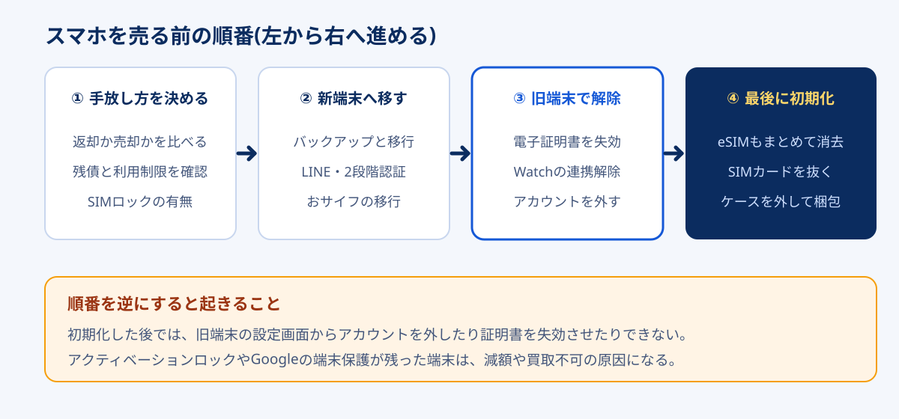

乗り換えや機種変更で手元に残ったスマホを売るとき、多くの人が最初にやるのが「すべてのコンテンツと設定を消去」です。ところが、初期化は売る前の作業のうち、いちばん最後にやるものです。デジタル庁は、スマホに登録したマイナンバーカードの電子証明書について「端末の初期化では削除されない」と明記しています。iPhoneの「探す」やAndroidのGoogleアカウントも、外さずに初期化すると端末にロックが残ります。
買取業者の側から見ても、ここは査定額に直結します。この記事で紹介するスマホ宅配買取のmmobaは、公式サイトで「アクティベーションロックがかかったままだと検品ができずジャンク品扱いになる」と案内しています。同じ端末でも、手順を1つ飛ばしただけで値段が大きく下がりうるわけです。
この記事では、Apple公式の「iPhoneを売却・譲渡する前にやるべきこと」とデジタル庁・各キャリアの案内をもとに、売る前の作業を10ステップの順番に並べ直しました。返却プログラムに出すか自分で売るかの判定から、初期化で消えるもの・消えないものの一覧まで、2026年10月時点の情報でまとめています。
売る前の作業は「手放し方を決める → 新しい端末へ移す → 旧端末で解除する → 最後に初期化」の順。分割払いの返却プログラムに入っているなら、売る前に返却したほうが得かどうかを先に比べます。初期化の前に必ず済ませるのは、マイナンバーカードの電子証明書の失効、Apple Account・Googleアカウントのサインアウト、Apple Watchなどの連携解除の3つ。新しいスマホで2段階認証やおサイフケータイが使えることを確かめてから旧端末を初期化すれば、ロック残りによる減額と、ログインできなくなる事故の両方を防げます。
準備ができたら:mmobaで買取価格を調べる公式サイトへ →PR・宅配キットで送るスマホ買取。査定に納得できなければ返送料は同社負担
全体の順番:4つの段階と10のステップ
売る前の作業は、ネット上のチェックリストだと10〜20項目がばらばらに並んでいることが多く、どれから手を付けるかで迷います。実際には、作業は4つの段階に分かれていて、段階の順番さえ守れば、段階の中の細かい順序はそれほど重要ではありません。

| 段階 | ステップ | やらないと起きること |
|---|---|---|
| ① 手放し方を決める | 1. 返却か売却かを比べる 2. 残債とネットワーク利用制限を確認 3. SIMロックの有無を確認 | 返却したほうが得だったのに売ってしまう。△判定で減額される |
| ② 新しい端末へ移す | 4. バックアップとデータ移行・LINE 5. 2段階認証とSMS認証の移行 6. おサイフケータイ・決済アプリ | 写真やトーク履歴が消える。銀行やSNSにログインできなくなる。電子マネーの残高が宙に浮く |
| ③ 旧端末で解除する | 7. 電子証明書(マイナンバーカード)の失効 8. Apple Watch・AppleCareなどの解除 9. Apple Account・Googleアカウントを外す | 証明書が残ったまま他人の手に渡る。ロックが残って減額・買取不可になる |
| ④ 最後に初期化 | 10. 初期化(eSIMも消去)・SIMを抜く・梱包 | 個人データが残る。SIMカードを入れたまま送ってしまう |
作業時間の目安は、データ移行を除けば30分〜1時間ほどです。ただし段階2と段階3のあいだに数日あけるのが理想です。新しいスマホで銀行アプリや2段階認証が問題なく使えることを確かめてから、旧端末の解除に進むほうが安全だからです。詳しくは後半の売るタイミングで説明します。
初期化で消えるもの・消えないもの
「初期化すれば全部きれいになる」という思い込みが、この作業でいちばん多い失敗のもとです。初期化が消すのは端末の中にあるデータだけで、サーバー側や契約側に残っている紐付けには手が届きません。下の表で、初期化の前に自分で外す必要があるものを確認してください。
| 対象 | 初期化で | どうするか |
|---|---|---|
| 写真・アプリ・連絡先・メッセージ | 消える | 消える前にバックアップと移行(ステップ4) |
| iPhoneのアクティベーションロック | 消えない | 「探す」をオフにし、Apple Accountからサインアウト(ステップ9) |
| Androidの端末保護(FRP) | 消えない | Googleアカウントを端末から削除(ステップ9) |
| スマホ用電子証明書(マイナンバーカード) | 消えない | マイナポータルアプリで失効・削除(ステップ7) |
| 「信頼できるデバイス」の登録 | 消えない | Apple Account・Googleアカウントの管理画面から削除(ステップ10の後) |
| ネットワーク利用制限(○△×) | 変わらない | IMEIで管理されているため、各キャリアのサイトで確認(ステップ2) |
| 分割払いの残り | 消えない | 売っても支払いは続く。返却プログラムと比べる(ステップ1) |
※ 2026年10月時点のApple・デジタル庁・各キャリアの公開情報をもとに整理しています。
表の「消えない」が並んでいる行は、どれも端末の外にある記録です。初期化しても、Appleのサーバーには「この端末は誰のApple Accountに紐付いているか」が、マイナンバーの仕組みには「この端末に証明書を発行した」という記録が残ります。だから、端末がまだ自分の手元にあって設定画面を開けるうちに、自分で外しておく必要があります。
段階1:手放し方を決める(ステップ1〜3)
ステップ1. 返却プログラムに出すか、自分で売るかを比べる
大手キャリアで端末を分割購入している場合、まず確認したいのが端末の返却プログラムに入っているかどうかです。ドコモの「いつでもカエドキプログラム」、auの「スマホトクするプログラム」、ソフトバンクの「新トクするサポート」、楽天モバイルの「買い替え超トクプログラム」などが該当します。所定の時期に端末を返すと、残りの分割払いが免除される仕組みです。
このプログラムに入っている端末を自分で売ると、免除されるはずだった残りの支払いを自分で払い続けることになります。比べ方は単純で、次の2つの金額の大小を見ます。
返却か売却かの判定式
- 返却したときの負担 = 返却時にかかる費用(プログラム利用料や、傷・故障がある場合の負担金など)
- 売却したときの負担 = 免除されなくなる残りの分割代金 − 買取価格
売却側の負担のほうが小さければ売る、大きければ返却する。たとえば(仮の数字ですが)免除額が6万円で買取価格が4万円なら、売ると2万円損をする計算です。逆に、人気機種で買取価格が免除額を上回るなら、売ったほうが手元に残ります。
返却プログラムの条件は2026年にも変更が続いています。報道ベースでは、ドコモは2026年3月に早期返却時のプログラム利用料を設け、ソフトバンクは2026年8月に返却時の査定基準と故障時の負担金を見直しました。返却時に追加の費用がかかる場面が増えているので、「返却すれば必ずタダ」とは考えず、自分の契約の条件をマイページで確認してから比べてください。返却プログラムに入っていない端末(一括購入やSIMフリー版)は、この比較は不要です。
ステップ2. 残債とネットワーク利用制限を確認する
キャリアで買った端末には、ネットワーク利用制限という状態表示があります。端末のIMEI(製造番号)を各キャリアの確認サイトに入力すると、次のいずれかが表示されます。
| 表示 | 意味 | 買取への影響(傾向) |
|---|---|---|
| ○ | 代金の支払いが済んでいて、制限の対象外 | 通常どおり査定される |
| △ | 分割払いが残っている(支払い中) | 買い取る業者が多いが、減額されるケースがある |
| × | 支払いの滞納などで利用が制限されている(いわゆる赤ロム) | 買取不可、または大幅な減額 |
| − | そのキャリアで販売した端末ではない(SIMフリー版など) | 通常どおり査定される |
IMEIは、電話アプリで「*#06#」と入力するか、iPhoneなら「設定」→「一般」→「情報」で確認できます。△の端末を売るのは違法ではなく、分割代金を払い続ければ問題ありません。ただし買い取る側には「後から×になるかもしれない」というリスクがあるため、査定で差がつきます。残りが少額なら一括で払って○にしてから売ると、減額を避けられることがあります。一括精算で得をするかは、残額と査定額の差で判断してください。
ステップ3. SIMロックの有無を確認する
総務省のガイドライン改正により、2021年10月1日以降に発売された端末は、原則としてSIMロックがかかっていません。それより前に発売された機種をキャリアで買った場合は、SIMロックが残っていることがあります。
iPhoneなら「設定」→「一般」→「情報」の「SIMロック」の欄に「SIMロックなし」と表示されていれば解除済みです。ロックが残っていると買取価格が下がることがあるため、キャリアのマイページやショップで解除してから売るのが一般的です。mmobaの公式サイトも、SIMロックの解除はキャリアのWebサイトかショップで行うよう案内しています。解約した後だとWebで手続きできないキャリアもあるので、乗り換え前に済ませておくのが確実です。
段階2:新しい端末へ移す(ステップ4〜6)
ステップ4. バックアップとデータ移行、LINEの引き継ぎ
写真・連絡先・アプリのデータは、iPhoneならiCloudバックアップかクイックスタート、AndroidならGoogleのバックアップとデータ移行ツールで新しい端末に移します。移行が終わったら、新しい端末で写真のライブラリが最後まで表示されるかを確かめてください。クラウドへの同期が途中で止まっていて、旧端末を初期化した後に一部の写真が無いと気づく、という失敗があります。
LINEは、OSをまたぐ移行(iPhoneからAndroid、またはその逆)だとトーク履歴の扱いに制限があります。旧端末でトーク履歴のバックアップを取り、新しい端末でログインしてトークが表示されることを確認するまでは、旧端末のLINEは消さないでください。
ステップ5. 2段階認証とSMS認証を移す
見落としやすいのがここです。Google AuthenticatorやMicrosoft Authenticatorのような認証アプリのコードは、端末の中にしかない場合があります。アプリのアカウント移行機能を使うか、各サービスの設定画面で認証アプリを新しい端末に登録し直してから、旧端末を手放します。
電話番号を引き継いで乗り換えた場合、SMSで届く認証コードは新しい端末で受け取れます。ただし、乗り換えで電話番号が変わったなら、銀行・証券・SNSなどに登録している電話番号を先に変更しておかないと、ログインのたびにコードが旧番号へ送られて受け取れなくなります。
ステップ6. おサイフケータイ・交通系IC・決済アプリを移す
モバイルSuicaやPASMO、楽天Edyなどの電子マネーは、各アプリの「機種変更」の手続きをしてから移すのが基本です。Androidのおサイフケータイは、旧端末で残高をサーバーに預ける操作が必要なサービスが多く、手続きをせずに初期化すると、残高の移行に別の手続きと時間がかかることがあります。iPhoneのウォレットに入れた交通系ICも、各サービスの案内に沿って移行してください。
QRコード決済(PayPay・楽天ペイなど)はアカウントにひもづくため、新しい端末でログインすれば多くの場合そのまま使えます。ただ、本人確認の再実施を求められることがあるので、旧端末が手元にあるうちに新しい端末で一度決済画面を開いておくと安心です。
段階3:旧端末で解除する(ステップ7〜9)
ステップ7. マイナンバーカードの電子証明書を失効させる
スマホでマイナポータルにログインしたり、コンビニで証明書を取ったりするために、スマホにマイナンバーカードの機能を入れている人は増えています。デジタル庁は、Androidのスマホ用電子証明書について、機種変更・下取り・売却・廃棄などでスマホの利用をやめるときは、利用者本人が電子証明書を失効させる義務があると案内しています。端末の初期化では削除されないとも明記されています。
-
通常の手順
マイナポータルアプリ(マイナアプリ)のメニューから失効・削除を行います。登録時に設定したパスワード(英数字6〜16文字)が必要です。
-
パスワードを忘れた場合
マイナンバーカード本体を使ってパスワードを初期化・再設定してから失効させます。カードが手元にあるうちに済ませてください。
-
失効させずに初期化してしまった場合
デジタル庁の案内では、アプリを入れ直してネットワークにつないだ状態で開くと古い証明書が削除されるとされています。端末がもう手元にない場合は、マイナンバー総合フリーダイヤルで一時利用停止を行います。
2025年に始まったiPhoneのマイナンバーカード(ウォレットに追加する方式)も、手放す前に旧端末から削除しておくのが安全です。手順はデジタル庁のiPhone向けの案内で確認してください。マイナンバーカードの機能を入れていない人は、このステップは飛ばして構いません。
ステップ8. Apple Watch・AppleCare・Bluetooth機器の連携を外す
Apple Watchとペアリングしている場合、AppleはiPhoneを消去する前にペアリングを解除するよう案内しています。解除するとWatch側のバックアップがiPhoneに作られ、Watchのアクティベーションロックも外れます。AppleCareに加入している場合は、解約するか、譲渡先に移すかを決めておきます。ワイヤレスイヤホンやスマートウォッチなど、Androidでつないでいた機器も、専用アプリ側の登録を新しい端末に移しておきます。
ステップ9. Apple Account・Googleアカウントを外す
査定に最も影響するのがこのステップです。
- iPhone:「設定」→自分の名前から、Apple Accountからサインアウトします。iOS 18以前はサインアウト時にApple Accountのパスワードを入力して「探す」をオフにします。iOS 26以降は、サインアウトの画面で「このiPhoneを消去」か「消去せずにサインアウト」を選ぶ流れです。キャリアを変えてAndroidに移る場合は、iMessageの登録解除も行います。
- Android:「設定」→「アカウント」(機種により「パスワードとアカウント」など)から、Googleアカウントを削除します。Galaxyのサムスンアカウント、Xiaomiアカウントなどメーカー独自のアカウントも、同じように端末から外します。
ロックが残った端末は「買取不可」や「ジャンク扱い」になりうる
iPhoneの「探す」がオンのまま初期化すると、次に起動したときにApple Accountのパスワードを求められ、持ち主以外は使えません。AndroidもGoogleアカウントを外さずに初期化すると、最後に使ったアカウントでログインしないと使えない端末保護(FRP)がかかります。どちらも盗難対策の仕組みなので、買取業者の側では解除できません。発送してから気づいた場合は、業者に連絡して遠隔での解除方法を確認することになり、入金が遅れる原因になります。
段階4:最後に初期化する(ステップ10)
ステップ10. 初期化・SIMを抜く・梱包、そして登録デバイスの削除
ここまで終わってから、初期化します。iPhoneは「設定」→「一般」→「転送またはiPhoneをリセット」→「すべてのコンテンツと設定を消去」。eSIMを使っていた場合は、eSIMも消去する選択肢を選びます。Androidは「設定」→「システム」→「リセットオプション」→「全データを消去(出荷時リセット)」が一般的な場所です(機種で名称が違います)。
-
初期化の後に起動して確認する
初期設定の最初の画面(「こんにちは」など)まで進み、Apple AccountやGoogleアカウントのパスワードを求められないことを確認します。求められたら、ロックが残っています。
-
SIMカード・microSDカードを抜く
物理SIMを入れたまま送ってしまう失敗は意外に多くあります。SIMトレイを開けて空にし、microSDカードも抜きます。
-
ケース・フィルムを外して外観を拭く
汚れは減額の理由になりやすい一方、フィルムを無理にはがして傷を付けると逆効果です。はがしにくいフィルムは無理をしないでください。
-
アカウント側から旧端末を削除する
Appleは、初期化した後に「信頼できるデバイス」のリストから旧端末を削除するよう案内しています。Googleアカウントも、セキュリティ設定の「お使いのデバイス」から旧端末を削除しておきます。
売るタイミング:乗り換え直後に手放さない理由
中古スマホの買取価格は、新機種の発表や発売のあとに下がる傾向があります。そのため「乗り換えたらすぐ売る」ほうが価格面では有利に見えます。それでも、新しい回線と端末の動作を確かめる期間は取っておくことをおすすめします。
| 時期 | 状況 | 旧端末の扱い |
|---|---|---|
| 乗り換え当日 | 開通直後。SIMやeSIMの設定がうまくいかない可能性がある | まだ何も消さない |
| 2〜7日目 | 毎日使うアプリ・決済・2段階認証が一巡する時期 | 段階2(移行)を完了させる |
| 1〜2週間 | 新しい端末の初期不良が見つかりやすい時期 | 問題がなければ段階3・4へ |
| それ以降 | 新機種の発表が近づくと相場が下がりやすい | 迷っているなら早めに査定を取る |
特に、乗り換え先の回線が自宅や職場でつながりにくいと分かった場合、旧端末が手元にあれば当面の代わりに使えます。回線の選び直しが必要になったときの考え方は、格安SIMで後悔する人の共通点にまとめています。乗り換えの時期そのものを月末・月初どちらにするかは、格安SIMの乗り換えタイミングで会社別に比較しました。
宅配買取の流れと、mmobaを使うときの注意
スマホを売る方法は、キャリアの下取り、店頭の買取店、フリマアプリ、宅配買取に分かれます。フリマアプリは高く売れる可能性がある一方で、出品・発送・購入者とのやりとりの手間と、売れた後のトラブル対応がついて回ります。手間をかけずに現金化したい人に向くのが宅配買取です。
| 売り方 | 手間 | 価格の傾向 | 向く人 |
|---|---|---|---|
| キャリアの下取り | 少ない(機種変更と同時) | ポイント還元が中心で、現金にならないことが多い | 店頭でまとめて済ませたい人 |
| 店頭の買取店 | 店に行く必要がある | その場で金額が決まる | 近くに店がある人 |
| フリマアプリ | 多い(出品・発送・連絡) | 高く売れる可能性がある | 手間をかけても高く売りたい人 |
| 宅配買取 | 少ない(キットで送るだけ) | 店頭と同程度のことが多い | 家から出ずに現金化したい人 |
※ 価格の傾向は一般的な目安で、機種・状態・時期によって変わります。
mmoba買取は、株式会社エムコム(古物商許可 大阪府公安委員会 第621110191037号)が運営するスマホ・タブレットの宅配買取です。公式サイトで案内されている流れは次のとおりです(2026年10月時点)。
-
Webで査定を申し込む
14時までに申し込みが確認できれば当日、14時以降は翌日に宅配キットが発送されます。
-
キットに入れて着払いで送る
キットに同封されている「配送前の最終チェック」に沿って初期化などを確認し、端末を梱包して同封の着払伝票で送ります。本人確認書類(運転免許証・マイナンバーカード・パスポートなど)が必要です。
-
査定結果を確認する
端末の到着後、最短で翌営業日に査定結果が連絡されます。
-
承諾すると入金
査定額を承諾すると、最短2営業日で入金されます。納得できない場合は、費用は同社負担で返送されます。
- キットと着払伝票で送れるので、梱包材を用意しなくてよい
- 査定額に納得できなければ、返送料の負担なく戻してもらえる
- iPhone・Android・iPad・タブレット・携帯電話が対象
- 付属品(箱・ケーブル)の有無で査定額を増減しないと案内している
- 金額が確定するのは端末が届いてから。店頭のように即日現金にはならない
- アクティベーションロックが残っているとジャンク扱いになる
- 赤ロム(×)の端末は買取不可の場合がある
- 書類に不備があると入金が遅れることがある
公式サイトには「初期化されていない端末は同社側で初期化する」とも書かれています。それでも、アカウントの解除と電子証明書の失効は業者側ではできないので、この記事の段階3までは必ず自分で済ませてから送ってください。
端末を売るのは乗り換えが終わってからです。通話込みで手続きをWebで完結させたいならahamo、データ量を細かく選びたいなら格安SIMが候補になります。
ahamoの料金と条件を見る5分かけ放題込み・Webで申し込み※ 広告(PR)。料金・キャンペーン・端末の取り扱いは公式サイトで最新の条件をご確認ください。
よくある質問
初期化だけしてから売っても大丈夫ですか?
分割払いが残っているスマホも売れますか?
SIMロック解除はしてから売ったほうがいいですか?
マイナンバーカードをスマホに入れていた場合はどうすればいいですか?
アクティベーションロックを外し忘れて発送してしまいました。
乗り換えてから、どれくらいで旧端末を売るのがいいですか?
まとめ:初期化は「最後の1回」
- 売る前の作業は手放し方を決める → 新端末へ移す → 旧端末で解除 → 最後に初期化の4段階
- 返却プログラムに入っているなら、返却の負担と「残りの分割代金−買取価格」を比べる
- ネットワーク利用制限が△だと減額のケースがある。残りが少額なら一括精算で○にしてから売る選択肢もある
- 初期化で消えないのはアクティベーションロック・Googleの端末保護・スマホ用電子証明書・信頼できるデバイスの登録
- 旧端末を手放すのは、新しい端末で2段階認証や決済が使えることを確かめてから。目安は乗り換えから1〜2週間
手順さえ守れば、売る前の準備は難しい作業ではありません。端末を売って得たお金を、次の通信費の見直しにつなげるなら、毎月の支払いをどう組み直すかはスマホ料金の見直し方、乗り換え先の候補選びは格安SIM5社の比較が続きになります。手続きの方式で迷っているならMNPワンストップの判定から確認してください。
- Appleサポート「iPhone、iPad、iPod touchを売却、譲渡、下取りに出す前にやっておくべきこと」(2026年10月確認) — バックアップ、Apple Watchのペアリング解除、サインアウト(iOS 26以降とiOS 18以前の違い)、eSIMの消去、信頼できるデバイスからの削除
- デジタル庁「スマホ用電子証明書を登録しているスマートフォンの利用をやめるとき」(2026年10月確認) — 失効の義務、初期化では削除されないこと、パスワードを忘れた場合・初期化後の対処
- 総務省「移動端末設備の円滑な流通・利用の確保に関するガイドライン」(2021年8月改正) — 2021年10月1日以降に販売される端末のSIMロック原則禁止
- NTTドコモ・au・ソフトバンク各社の「ネットワーク利用制限携帯電話機確認」ページ(2026年10月確認) — ○△×の判定とIMEIによる確認方法
- 各キャリアの端末返却プログラム(いつでもカエドキプログラム、スマホトクするプログラム、新トクするサポート、買い替え超トクプログラム)の公式案内と、2026年の条件変更に関する報道(2026年10月確認)
- mmoba買取 公式サイトおよび「古物営業法に基づく表記」(2026年10月確認) — 買取の流れ、キットの発送時刻、査定・入金の日数、返送料、アクティベーションロック・赤ロムの扱い、本人確認書類、古物商許可番号
※ 本文中の手順・条件は2026年10月時点の目安です。OSのバージョンや機種、各社の規約変更で操作や条件が変わる場合があるため、作業の前に各社の公式案内をご確認ください。